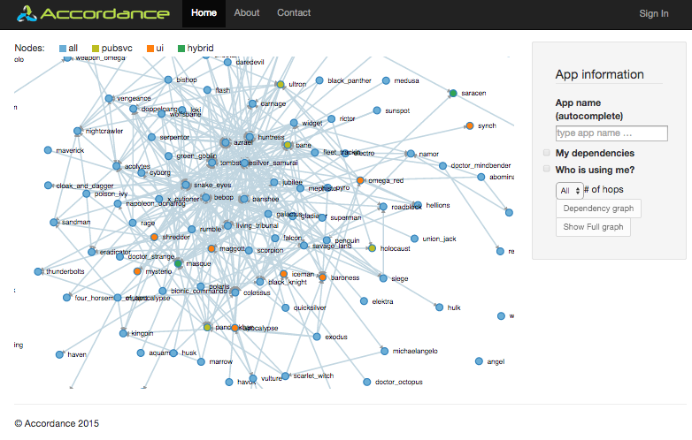

Why Accordance?
When you're starting to manage 100+ applications/services and infrastructure components of different flavors (like different types of data stores, storage, networking equipment, etc...), it is becoming increasingly hard to keep track of what is going in your data centers. Add on top of that a sprawl of different environments: sand-box, integration, staging, production, etc... Good luck with that!
Do your dependencies look like this?
This is close-to-real-life dependency graph of a large-scale cloud infrastructure. You can see that there are a lot of inter-service and service-to-infrastructure dependencies.
Use cases
In the high-velocity organizations, where multiple teams make decisions to introduce changes into the systems, it is becoming increasingly challenging to track and control the flow of these changes. The industry has reacted by imposing strict controls and regulations around the planning and implementation of the change management (like we see in ITIL and ITSM), which, in it’s own accord, creates heavy-weight processes and slows down the organization velocity even more.
When we’re talking about the DevOps culture, we’re advocating for increase of trust and responsibility of the teams and individuals. Giving them more power to make decisions and to make the right choice at the right moment. This means that the change in the infrastructure and the product can come from any direction and at any moment of time. Without good guard rails and safety nets this approach is very scary and, if left without any coordination, can be very disastrous.
With increasing number of teams, we have to increase the communication overhead to provide a good level of the coordination. This, usually, means more meetings, e-mail exchange, etc... Without automation of the coordination processeses the overhead is very substantial and painful.
These are the types of the problems we see in a lot of companies when they start moving to microservices.
Here are a couple of prevalent use cases:
- How do we reduce the troubleshooting? Reduce the impact of the failure? Reduce side effects of the change?
- How do we keep the track of "what" is there and "where" is that?
- How do we prevent the failures due to the incompatibility of the components?
- Can we automatically build sand-box environments if we know what components are required?
Accordance promises to address these and other related issues.
What is Accordance?
Accordance is a system that tracks the run-time dependencies of the components. The same way the POM for Maven and Gemfile for Ruby track the build-time dependencies, Accordance tracks the run-time dependencies of the components and services.
This system provides automation and safety nets, but it’s not magic and it heavily relies on people providing truthful information. If people go around the system then the information in the system becomes irrelevant and less trusted by the organization. So, in a sense, it’s a chicken-and-egg problem: the more you rely on the system the more incentivized you are to feed it with the right data. Unfortunately the opposite is true as well: the less reliable data is in the system the less people will use it.
Accordance, for the moment, attempts to solve the following use cases:
- Expose applications and components dependencies and treat them as first class citizens via BoM (Bill-of-Materials).
- Understand the topology of the environments and their relationships.
- Track the graph of dependencies of the applications and ensure that the graph is always valid: i.e. the deployment of any application or a change in the system is validated against the graph. If, at any moment, the graph can't be reconciled - the change is rejected.
- Track the changes in the environments (ideally via integration with other change management systems).
- Facilitate the communication between the components' owners.
- Build test and sand-box environment graphs for testing of the sub-systems.
Authors and Contributors
Main contributor: @igormoochnick.
Help is wanted, needed and appreciated.
Support or Contact
The source code is under MIT license and at different levels of completion. If it doesn't work for you - feel free to submit Issues to the appropriate Git repos.